[오늘의 증시 시황] 코스피 5,730선 안착 공방! 다우 사상 최고치와 스페이스X 흑자·테슬라 합병 훈풍 속 10월 22일 실전 대응 전략
[오늘의 증시 시황] 코스피 5,730선 안착 공방! 다우 사상 최고치와 스페이스X 흑자·테슬라 합병 훈풍 속 10월 22일 실전 대응 전략 - 밤사이 뉴욕증시 마감 및 거시경제 지표, 장 시작 전 국내 핵심 주도 섹터와 주요 뉴스 총정리.
복잡한 재무제표와 차트를 알기 쉽게 분석하여 시장보다 한발 앞선 투자 기회를 제시합니다. 데이터 기반 퀀트 리서치와 심층 분석 리포트로 나만의 투자 파이프라인을 완성하세요.
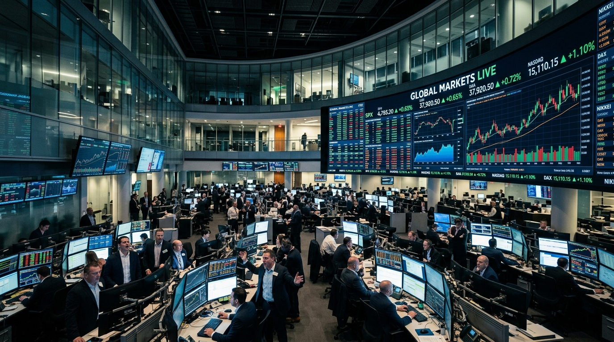
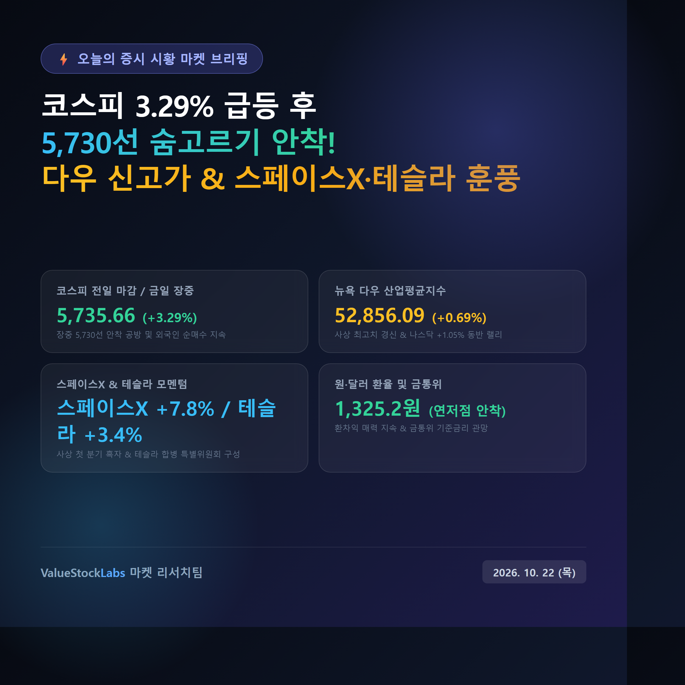
[오늘의 증시 시황] 코스피 5,730선 안착 공방! 다우 사상 최고치와 스페이스X 흑자·테슬라 합병 훈풍 속 10월 22일 실전 대응 전략 - 밤사이 뉴욕증시 마감 및 거시경제 지표, 장 시작 전 국내 핵심 주도 섹터와 주요 뉴스 총정리.
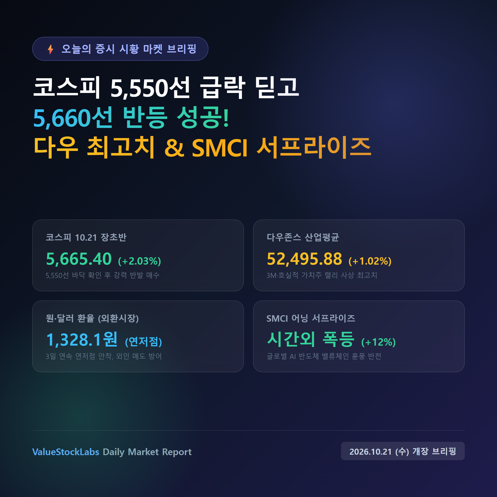
[오늘의 증시 시황] 코스피 5,550선 급락 딛고 5,660선 반등! 다우 최고치와 SMCI 어닝 서프라이즈 속 10월 21일 실전 대응 전략 - 밤사이 뉴욕증시 마감 및 거시경제 지표, 장 시작 전 국내 핵심 주도 섹터와 주요 뉴스 총정리.
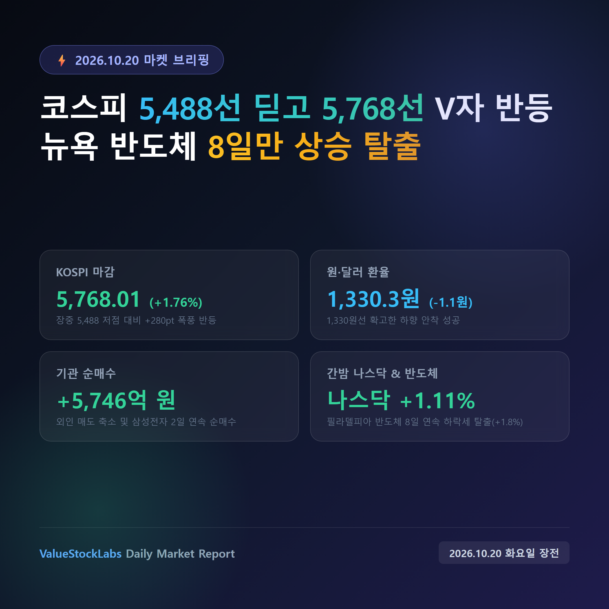
[오늘의 증시 시황] 코스피 5,488선 딛고 5,768선 V자 반등: 뉴욕 반도체 8일만 상승 속 10월 20일 실전 대응 전략 - 밤사이 뉴욕증시 마감 및 거시경제 지표, 장 시작 전 국내 핵심 주도 섹터와 주요 뉴스 총정리.
![[오늘의 증시 시황] 코스피 5,668선 반등과 나스닥 급락 충돌: 외인 8일만 순매수 전환 속 실전 대응 전략](images/daily-market-20261019/thumbnail.png)
[오늘의 증시 시황] 코스피 5,668선 반등과 나스닥 급락 충돌: 외인 8일만 순매수 전환 속 실전 대응 전략 - 밤사이 뉴욕증시 마감 및 거시경제 지표, 장 시작 전 국내 핵심 주도 섹터와 주요 뉴스 총정리.
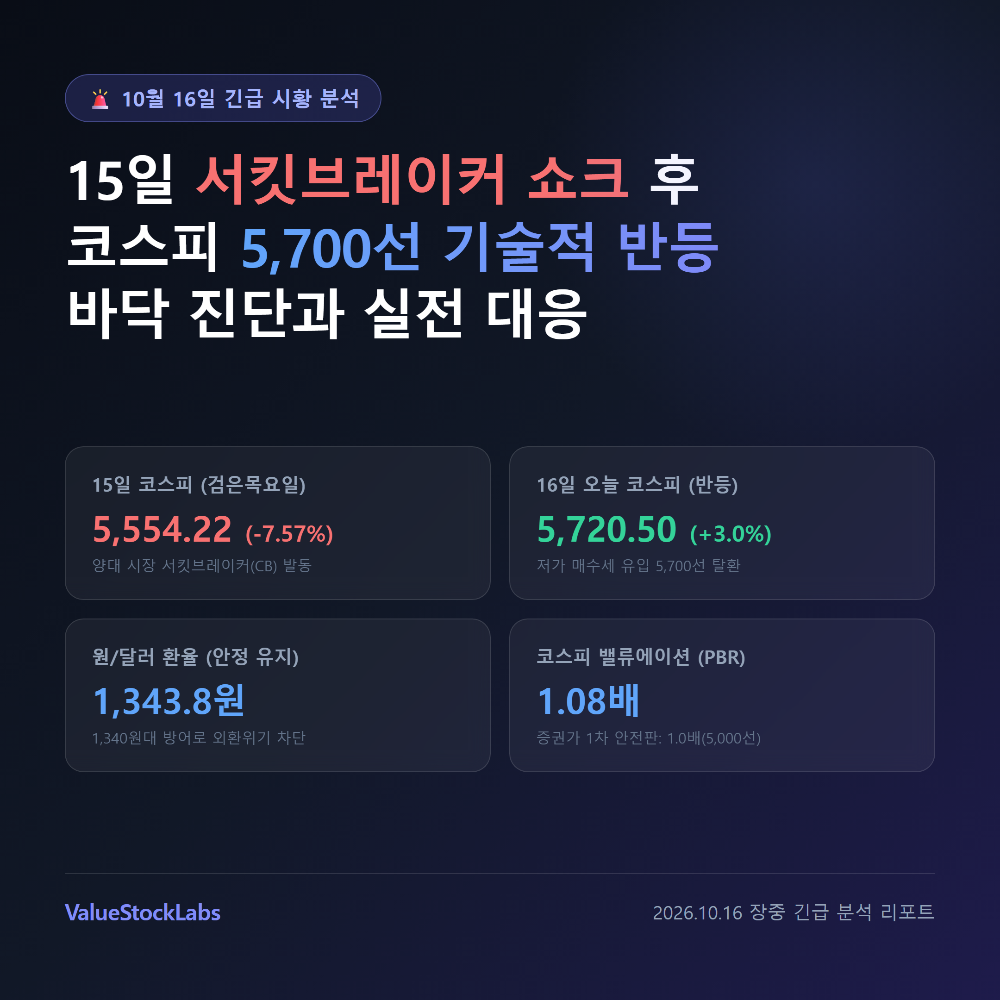
오늘의 증시 시황: 15일 서킷브레이커 쇼크 후 코스피 5,700선 기술적 반등... 환율 1,340원대와 PBR 1.0배 지지선 점검 - 밤사이 뉴욕증시 마감 및 거시경제 지표, 장 시작 전 국내 핵심 주도 섹터와 주요 뉴스 총정리.

오늘의 증시 시황: 美 9월 CPI 안도 랠리와 환율 안정, TSMC 실적 발표와 코스피 6,200선 탈환 전략 - 밤사이 뉴욕증시 마감 및 거시경제 지표, 장 시작 전 국내 핵심 주도 섹터와 주요 뉴스 총정리.
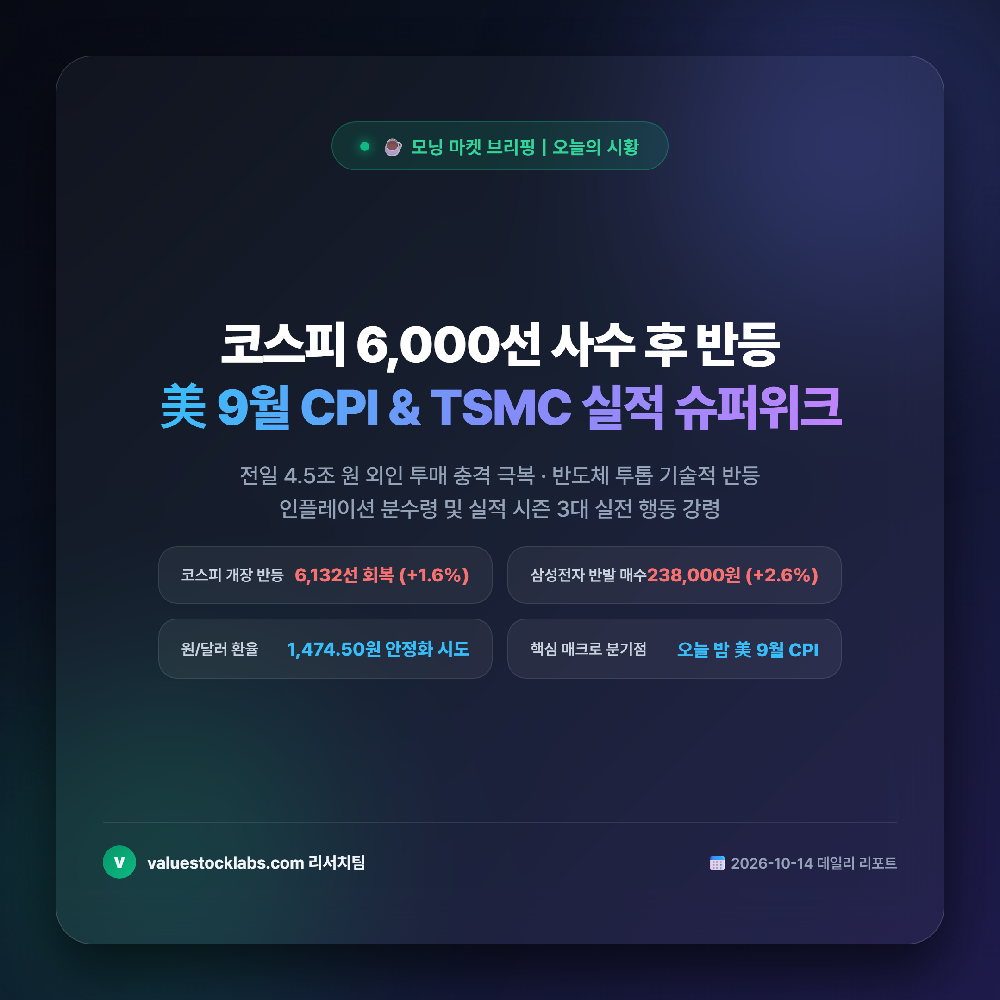
오늘의 증시 시황: 코스피 6,000선 사수 후 반등 개장, 9월 CPI·TSMC 실적 슈퍼위크 투자 전략 - 밤사이 뉴욕증시 마감 및 거시경제 지표, 장 시작 전 국내 핵심 주도 섹터와 주요 뉴스 총정리.
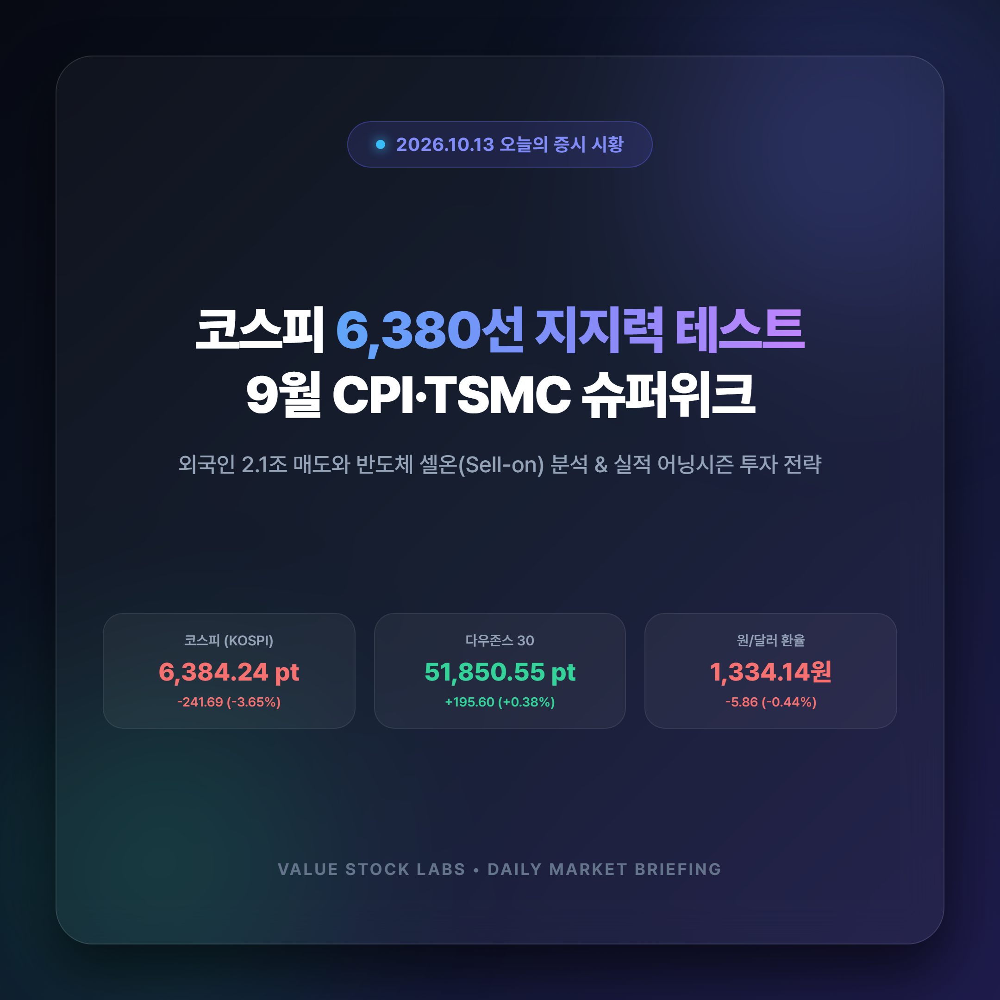
오늘의 증시 시황: 코스피 6,380선 지지력 테스트와 뉴욕증시 혼조, 9월 CPI·TSMC 슈퍼위크 투자 전략 - 밤사이 뉴욕증시 마감 및 거시경제 지표, 장 시작 전 국내 핵심 주도 섹터와 주요 뉴스 총정리.
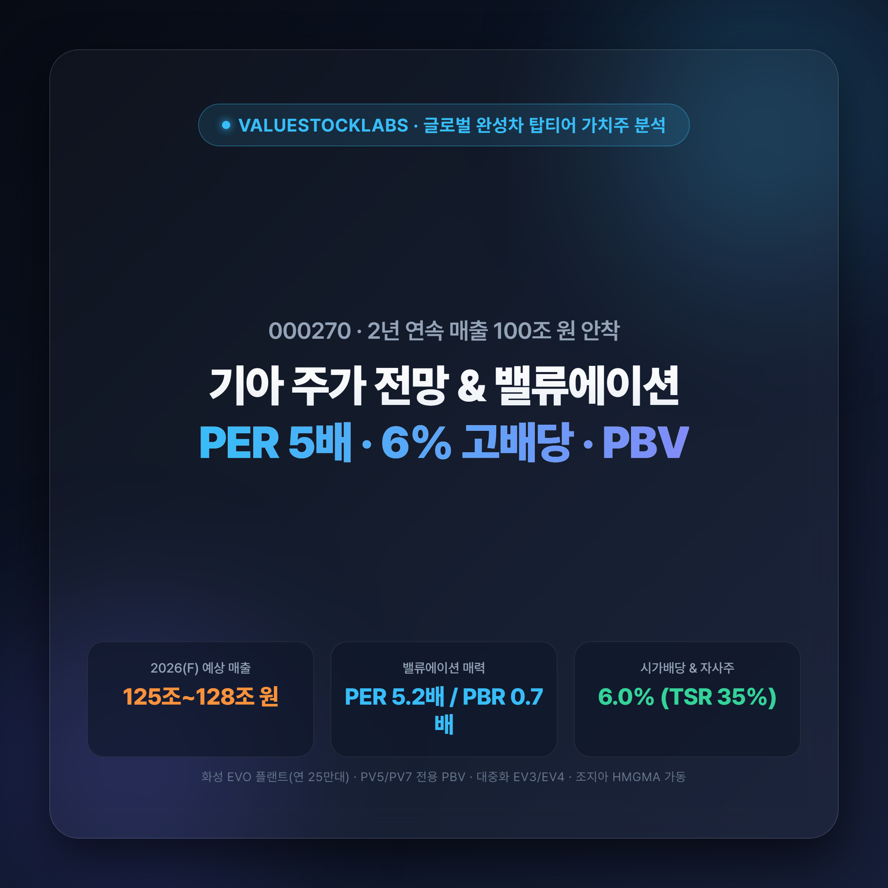
2년 연속 매출 100조 원 돌파! PER 5.2배·PBR 0.7배의 압도적 저평가와 6% 고배당, 화성 EVO 플랜트 PBV(PV5)와 조지아 HMGMA 가동을 통한 미래 성장 가치까지 기아(000270)를 심층 분석합니다.

코스피 6,450선 조정과 뉴욕증시 3대 지수 반등, 반도체 10월 수출 170.9% 폭증(122억 달러) 속 셀온 현상과 3분기 어닝시즌 투자 전략 총정리.

오늘의 증시 시황: 코스피 6,600선 조정과 뉴욕증시 반등, 3분기 어닝시즌 투자 전략 - 밤사이 뉴욕증시 마감 및 거시경제 지표, 장 시작 전 국내 핵심 주도 섹터와 주요 뉴스 총정리.

사상 최대 실적 경신과 국내 최초 밸류업 본공시를 통해 PBR 리레이팅을 이끄는 대한민국 금융 대장주 KB금융(105560)의 실적, 주주환원율, 보통주자본비율(CET1), 증권가 목표주가를 심층 분석합니다.
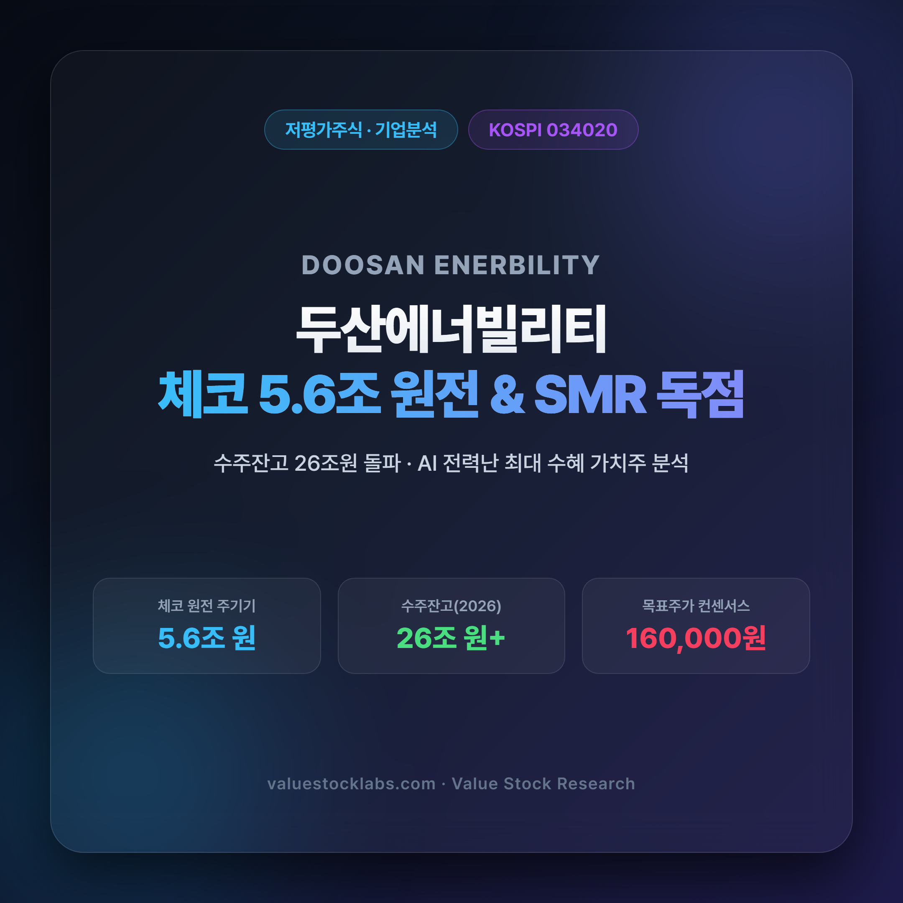
글로벌 원전 르네상스의 최전선, 체코 5.6조 원전 수주 잭팟과 빅테크 AI 전력난을 해소할 글로벌 'SMR 제조 파운드리 독점 지위'를 확보한 두산에너빌리티(034020)의 핵심 가치와 중장기 투자 전략을 정밀 분석합니다.
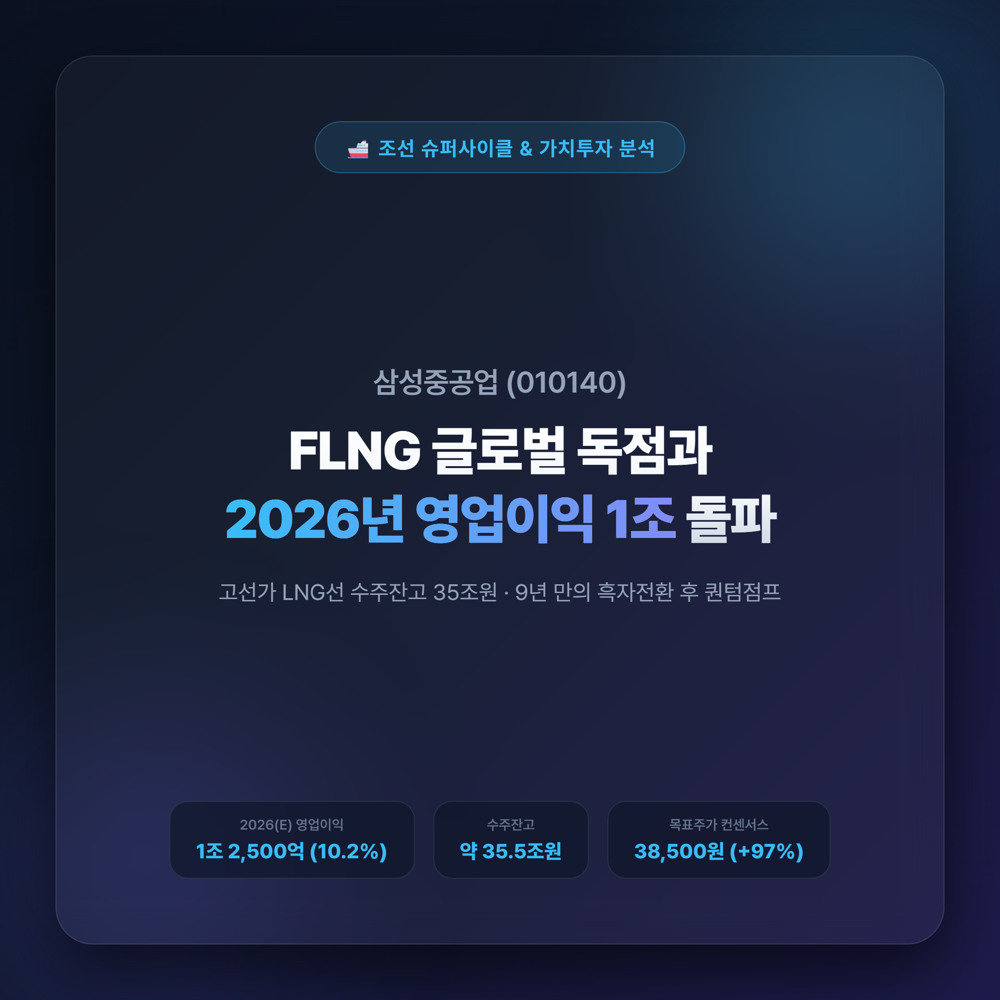
조선업 슈퍼사이클의 정점, 고선가 LNG선과 글로벌 FLNG 독점 수주로 9년 만의 흑자전환을 넘어 2026년 '영업이익 1조 클럽' 진입을 눈앞에 둔 삼성중공업(010140)의 핵심 투자 가치를 정밀 분석합니다.
오늘의 증시 모닝 브리핑 (2026년 10월 08일) - 밤사이 뉴욕증시 마감 및 거시경제 지표, 장 시작 전 국내 핵심 주도 섹터와 주요 뉴스 총정리.
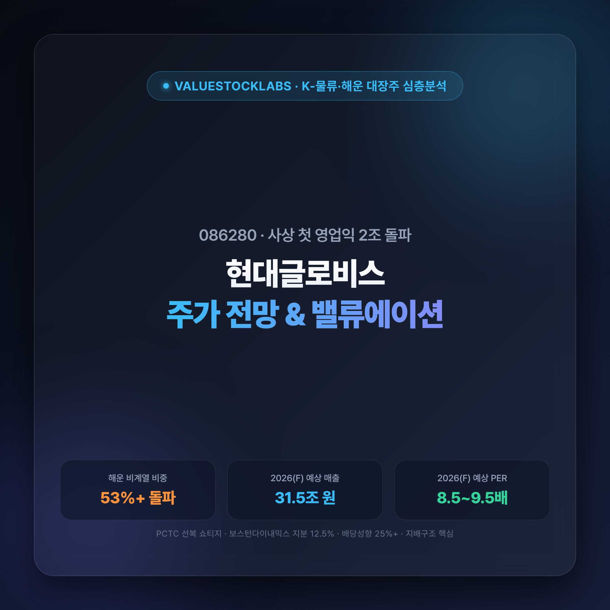
연간 영업이익 2조 원을 돌파하며 역대 최고 실적을 쓴 현대글로비스(086280)! 글로벌 PCTC 선복 부족 수혜, 비계열 매출 53% 확대, 보스턴 다이내믹스 지분 가치 및 파격적인 3개년 주주환원 정책을 심층 분석합니다.
오늘의 증시 모닝 브리핑 (2026년 10월 07일) - 밤사이 뉴욕증시 마감 및 거시경제 지표, 장 시작 전 국내 핵심 주도 섹터와 주요 뉴스 총정리.
오늘의 증시 모닝 브리핑 (2026년 10월 06일) - 밤사이 뉴욕증시 마감 및 거시경제 지표, 장 시작 전 국내 핵심 주도 섹터와 주요 뉴스 총정리.
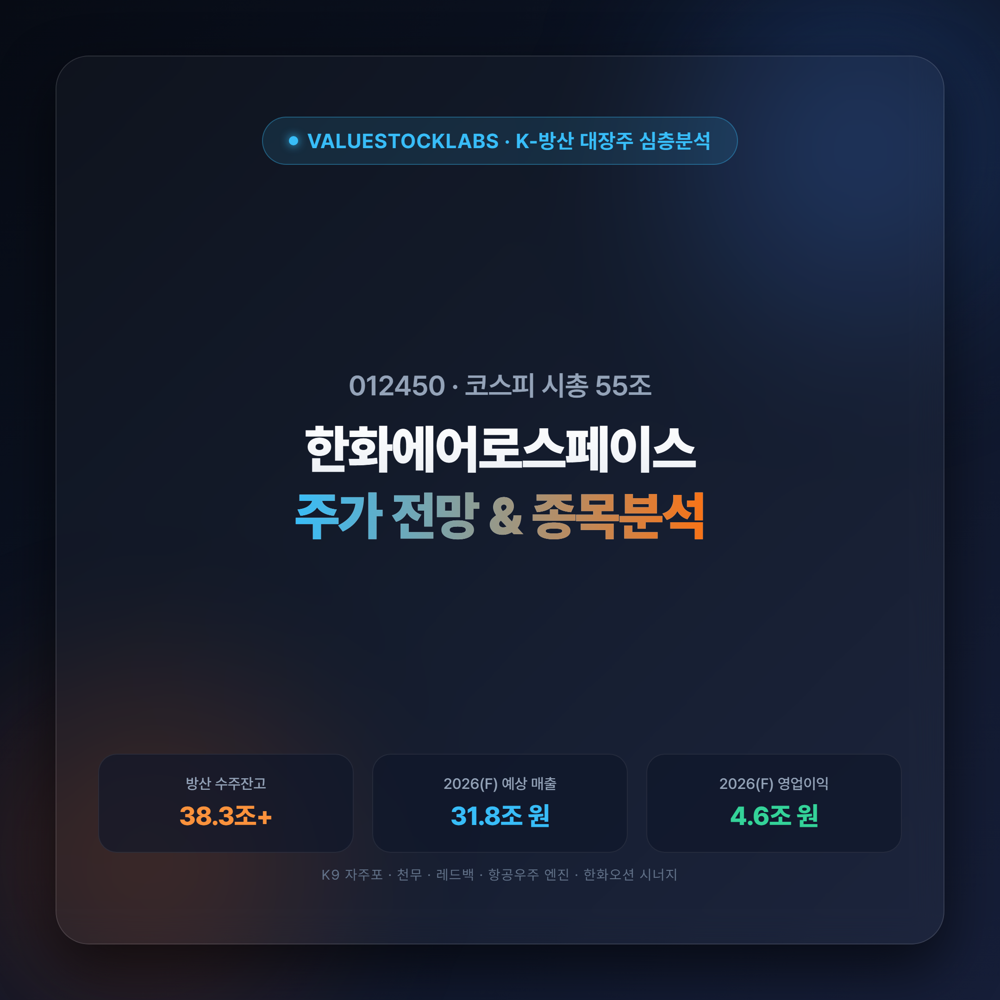
K9 자주포, 천무, 레드백을 앞세워 40조 원에 육박하는 수주잔고를 달성한 한화에어로스페이스(012450)! 인적분할 이후 순수 방산 컨트롤타워로 재평가받는 배경과 2026년 매출 30조·영업이익 4조 돌파 전망 및 목표주가를 심층 분석합니다.
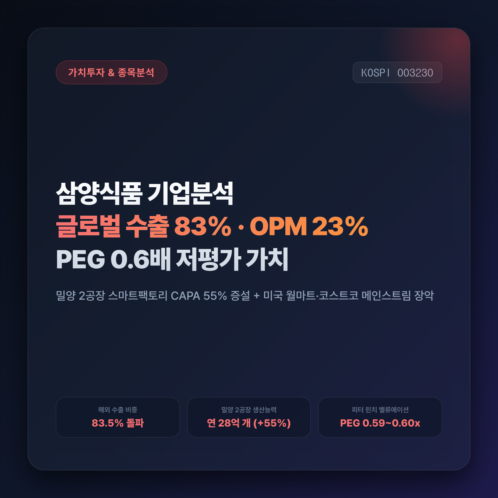
불닭볶음면 열풍으로 해외 수출 비중 83%를 돌파한 삼양식품(003230)! 밀양 2공장 가동에 따른 CAPA 55% 증설, OPM 23.4% 독보적 수익성, 피어 비교 및 피터 린치 PEG 0.6배 저평가 밸류에이션을 심층 분석합니다.
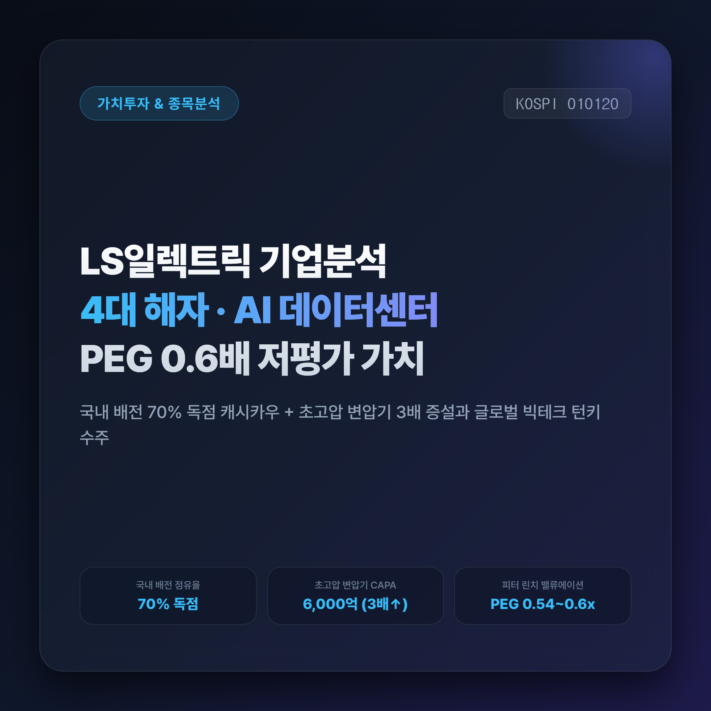
글로벌 AI 데이터센터와 북미 전력망 교체 슈퍼사이클의 실질적 수혜주 LS일렉트릭! 국내 70% 배전 과점 해자와 초고압 변압기 3배 증설, 국내외 경쟁사 비교 및 밸류에이션 저평가(PEG 0.6배)를 명쾌하게 분석합니다.
오늘의 증시 모닝 브리핑 (2026년 10월 03일) - 밤사이 뉴욕증시 마감 및 거시경제 지표, 장 시작 전 국내 핵심 주도 섹터와 주요 뉴스 총정리.
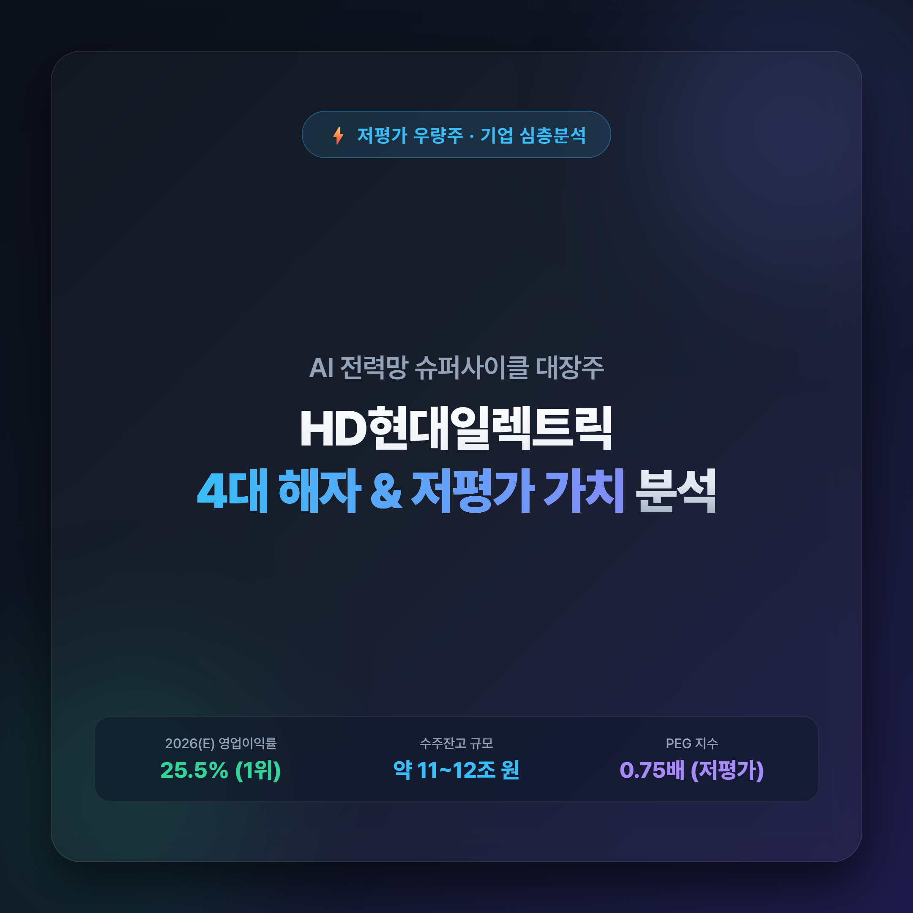
글로벌 AI 데이터센터와 미국 전력망 교체 슈퍼사이클의 최대 수혜주 HD현대일렉트릭! 독보적인 4대 경제적 해자와 영업이익률 25% 돌파 비결, 경쟁사 비교 및 재무제표 저평가(PEG) 밸류에이션을 명쾌하게 분석합니다.
오늘의 증시 모닝 브리핑 (2026년 10월 02일) - 밤사이 뉴욕증시 마감 및 거시경제 지표, 장 시작 전 국내 핵심 주도 섹터와 주요 뉴스 총정리.
오늘의 증시 모닝 브리핑 (2026년 10월 01일) - 밤사이 뉴욕증시 마감 및 거시경제 지표, 장 시작 전 국내 핵심 주도 섹터와 주요 뉴스 총정리.
오늘의 증시 모닝 브리핑 (2026년 09월 30일) - 밤사이 뉴욕증시 마감 및 거시경제 지표, 장 시작 전 국내 핵심 주도 섹터와 주요 뉴스 총정리.
오늘의 증시 모닝 브리핑 (2026년 09월 29일) - 밤사이 뉴욕증시 마감 및 거시경제 지표, 장 시작 전 국내 핵심 주도 섹터와 주요 뉴스 총정리.
오늘의 증시 모닝 브리핑 (2026년 09월 28일) - 밤사이 뉴욕증시 마감 및 거시경제 지표, 장 시작 전 국내 핵심 주도 섹터와 주요 뉴스 총정리.
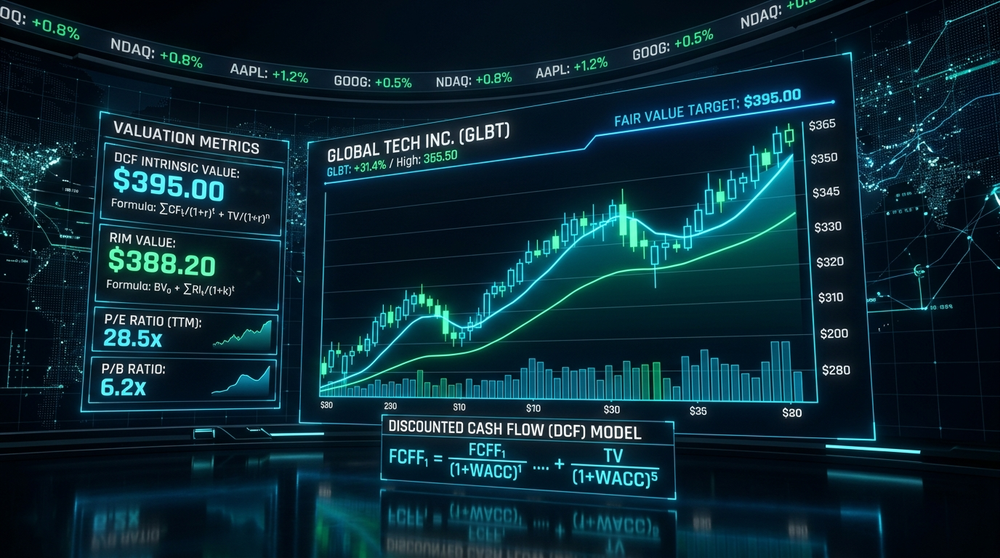
RIM(초과이익모델), DCF(현금흐름할인), 상대가치(PER·PBR·EV/EBITDA·PEG) 지표를 결합하여 기업의 진짜 내재가치와 안전마진을 계산하는 실전 퀀트 가치평가 완벽 가이드입니다.
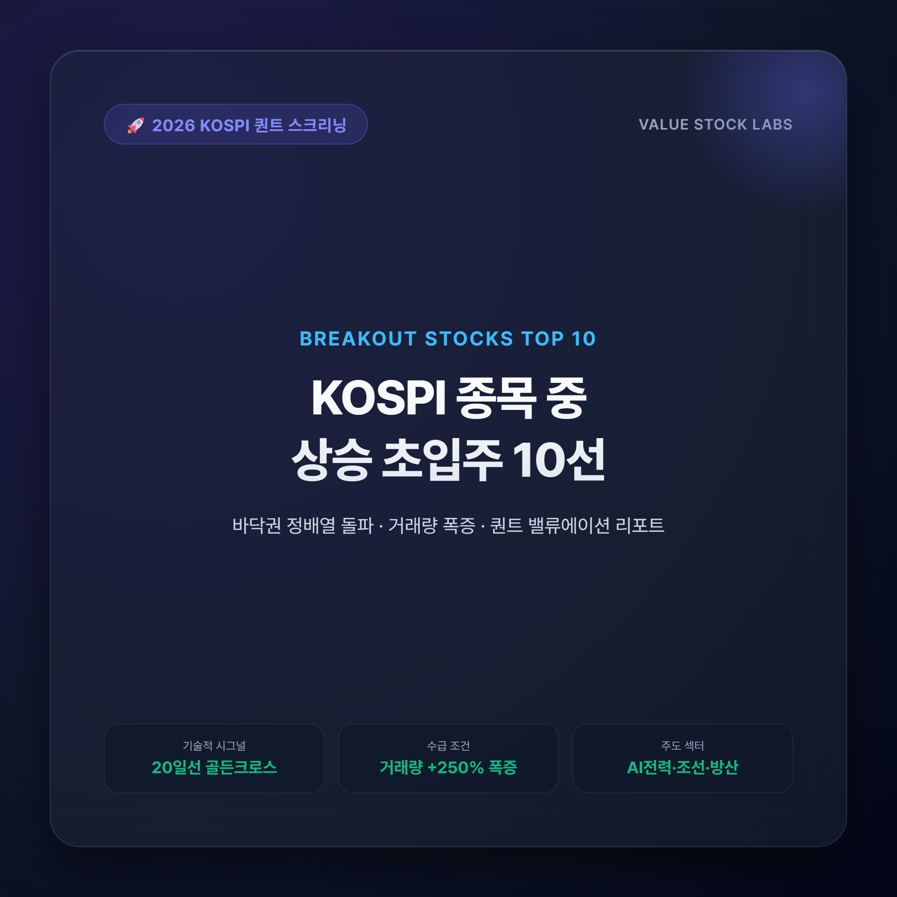
2026년 하반기 코스피 시장의 강력한 주도주로 부상하는 10개 상승초입주의 기술적 돌파 시그널, 실적 펀더멘털, 퀀트 비교 매트릭스 및 실전 매매 전략을 완벽히 정리해 드립니다.
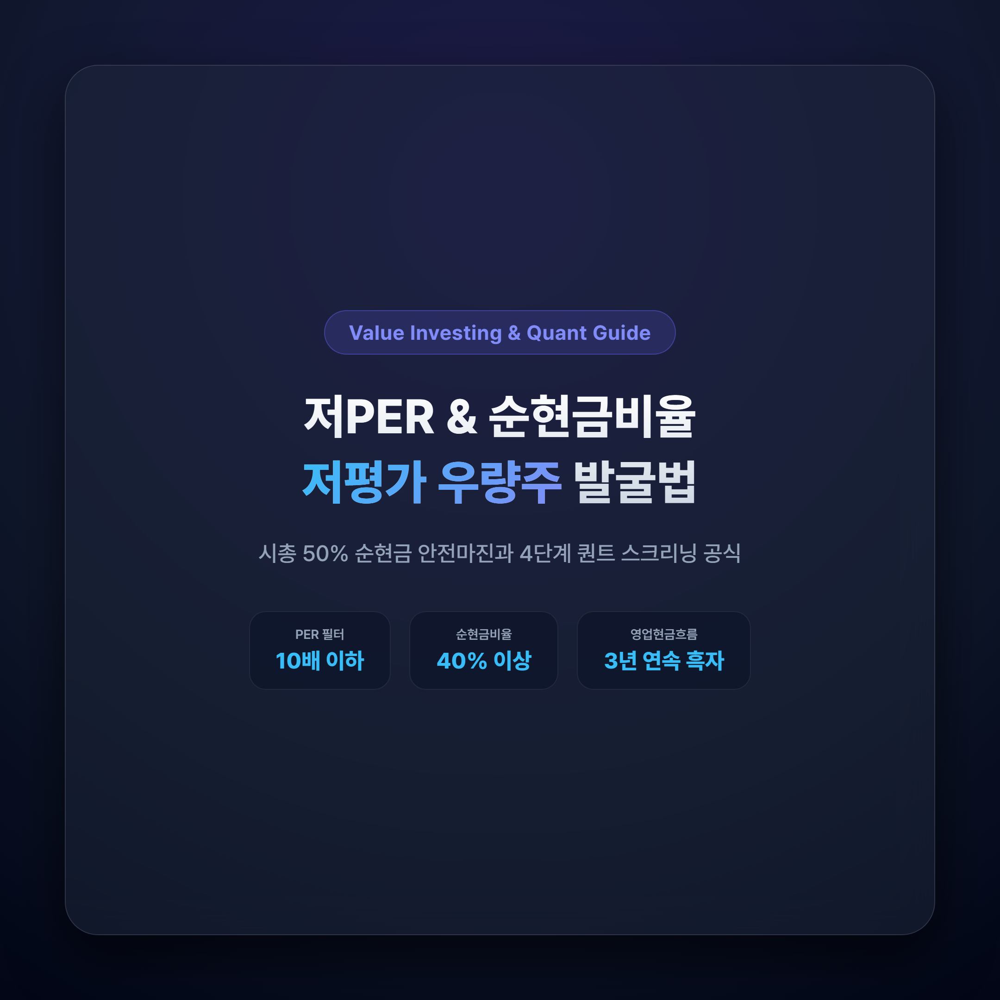
주가수익비율(PER)과 순현금비율(Net Cash Ratio)을 결합하여 강력한 안전마진을 확보하고 '가치 함정(Value Trap)'을 피하는 실전 4단계 퀀트 스크리닝 가이드입니다.
오늘의 증시 모닝 브리핑 (2026년 09월 26일) - 밤사이 뉴욕증시 마감 및 거시경제 지표, 장 시작 전 국내 핵심 주도 섹터와 주요 뉴스 총정리.